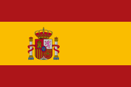

Pep Guardiola
"Nhạc trưởng vĩ đại sản sinh ra lối đá tiki-taka"

Mùa giải
2008-2012
Danh hiệu
- UEFA Champions League: 2009, 2011
- La Liga: 2008-09, 2009-10, 2010-11
- Cúp Nhà vua Tây Ban Nha: 2009, 2012
- Siêu cúp Tây Ban Nha: 2009, 2010, 2011
- Siêu cúp châu Âu: 2009, 2011
- Giải vô địch thế giới các câu lạc bộ: 2009, 2011
Tiểu sử
Vào ngày 8 tháng 5 năm 2008, Guardiola trở thành huấn luyện viên đội 1 của Barcelona. Trong mùa giải đầu tiên Guardiola làm huấn luyện viên, Barcelona đã giành cú ăn 6 ngoạn mục.
Chức vụ
Người Quản Lý
Ngày Sinh
18 thg 1, 1971
Số mùa giải
4
Quốc Gia
 Spain
Đã tham gia
8 Thg 5, 2008
Số danh hiệu
14
Ngày 13/5
Ở trận chung kết Cup nhà Vua trên sân Mestalla, các cầu thủ Barca đã vượt qua đội bóng xứ Basque, Bilbao, với tỷ số 4-1 để giành danh hiệu đầu tiên của mùa giải năm đó.
Ngày 16/5
3 ngày sau trên sân của Mallorca, các cầu thủ Barca bất ngờ để thua đội chủ nhà với tỷ số 1-2. Nhưng kết quả đó vẫn đủ giúp Gã khổng lồ xứ Catalunya có danh hiệu thứ 2 ở mùa giải 2008/2009. Bởi tại vòng này, Real cũng để thua đội chủ nhà Villarreal với tỷ số 2-3. Điều này đồng nghĩa thầy trò HLV Guardiola chính thức giành chức vô địch La Liga sớm trước 2 vòng đấu.
Ngày 27/5
Sau trận hòa kinh điển trên sân Stamford Bridge nhờ bàn san bằng tỷ số 1-1 trước Chelsea của Iniesta ở phút 93 tại vòng bán kết lượt về, Barca đã giành vé tham dự trận đấu cuối cùng tại Champions League. Đối thủ ở trận chung kết trên sân Olimpico của Roma chính là MU có sự góp mặt của Ronaldo. Thế nhưng, với bản lĩnh của nhà vô địch La Liga, thầy trò HLV Guardiola vượt qua Quỷ đỏ với tỷ số 2-0 để trở thành đội bóng đầu tiên tại xứ Bò tót giành cú ăn 3, và là CLB thứ 5 tại Châu Âu có vinh dự này.
Ngày 23/8
Mở màn cho mùa giải 2009/2010, Barca bước vào trận tranh siêu Cup Tây Ban Nha với Bilbao. Trước đối thủ đã thất bại ở trận chung kết Cup nhà Vua cách đó vài tháng, một lần nữa đội chủ sân Nou Camp lại thể hiện được sức mạnh của đội bóng cửa trên để có được danh hiệu thứ 4 trong năm 2009 với kết quả 5-1 chung cuộc (Barca thắng 2-1 trên sân của Bilbao và vượt qua đội bóng xứ Basque 3-0 ở trận lượt về tại Nou Camp).
Ngày 28/8
Thầy trò HLV Guardiola đã không bỏ lỡ cơ hội giành danh hiệu thứ 5 trong năm 2009 ở trận đấu tranh siêu Cup Châu Âu với Shakhtar Donetsk. Đội bóng Ukraine thi đấu rất cố gắng để đưa trận đấu bước vào 2 hiệp phụ. Tuy nhiên, ở phút thứ 115 của trận đấu, tài năng trẻ Pedro đã ghi bàn quyết định mang về thêm một vinh quang nữa cho đội chủ sân Nou Camp.
Ngày 19/12
Các cầu thủ Barca đã hoàn tất “cú ăn 6” lịch sử vào năm 2009 với chiến thắng 2-0 trước Estudiantes ở trận chung kết FIFA Club World Cup. Sau khi bị Mauro Boselli bên phía đội bóng của Argentina ghi bàn mở tỷ số từ khá sớm, Pedro đã một lần nữa tỏa sáng ở một trận chung kết mang về bàn san bằng cách biệt vào phút 88. Chưa hết, tới phút 110 của trận đấu, Messi tỏa sáng ghi bàn thắng quyết định giúp Barca đi vào lịch sử bóng đá Thế giới với tư cách đội bóng đầu tiên giành cú ăn 6 trong 1 năm.
Ngày 13/5: Cúp nhà vua
Barca 4-1 Bilbao
Ngày 16/5: La Liga
Vô địch sớm trước 2 vòng đấu.
Ngày 27/5: Champions league
Barca 2-0 Man United
Ngày 23/8: Siêu cúp Tây Ban Nha
Barca 3-0 Bilbao
Ngày 28/8: Siêu cúp châu âu
Barca 1-0 Shakhtar Donetsk
Ngày 19/12: FIFA Club World Cup
Barca 2-0 Estudiantes
"Nếu bạn sở hữu bóng, bạn không cần phải phòng thủ,
Bởi vì trên sân chỉ có một quả bóng duy nhất! "
-Johan Cruyff-
 Cameroon
Cameroon